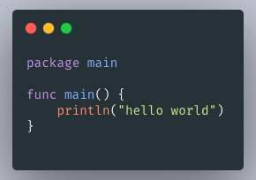

制作生成漂亮的代码截图
- 作者:
- 淡白
- 创建时间：
- 2021-08-23 11:05:16
- Go
摘要：这篇文章介绍了使用Go语言调用carbon的原理和代码。作者首先介绍了carbon的使用方法和制作代码截图的工具。然后作者通过使用谷歌无头浏览器来实现调用carbon生成代码截图的功能。作者使用了Go语言中的两个开源库，分别是chromedp和rod。最后，作者展示了使用Go代码调用carbon进行代码截图的示例代码，并详细解释了代码的运行原理。通过模拟输入方式输入代码，并通过获取dom的宽高来确定截图的大小。最终，作者成功生成了代码截图并返回了相关的图片数据。
使用carbon制作
这是一个nodejs开发的在线代码截图生成工具。

使用Go调用生成代码截图
实现原理：由于carbon是需要运行再浏览器通过前端dom生成的图片。所以需要通过谷歌无头浏览器来实现。
go有两个相关的开源库
我先是使用了第一个开源库，但是觉得有些繁琐便尝试了第二个库。很棒有中文的文档，api使用起来简单了许多。
carbon可以通过url传入参数但由于前端渲染只支持get请求所以无法传入过长的代码片段。所以我采用了模拟输入的方式来输入代码再通过获取dom的宽高获取截图大小实现长截图。
func code2Img(code string, Options ...map[string]string) ([]byte, error) {
var carbonOptions = map[string]string{
"bg": "rgba(74,144,226,1)", // 背景颜色
"t": "VSCode", // 主题
"wt": "none", // 窗口主题
"l": "auto", // language
"ds": "true", // 阴影
"dsyoff": "15px", // dropShadowOffsetY
"dsblur": "25px", // dropShadowBlurRadius
"wc": "true", // 窗口控件
"wa": "true", // 宽度调整
"pv": "30px", // 填充垂直
"ph": "50px", // 填充水平
"ln": "true", // 行号
"fl": "1", // 第一个行号
"fm": "Source Code Pro", // 字体系列
"fs": "13.5px", // 字体大小
"lh": "152%", // 行高
"si": "false", //平方图像
"es": "1x", // 出口尺寸
"wm": "false", // 水印
}
if len(Options) > 0 {
for k, v := range Options[0] {
carbonOptions[k] = v
}
}
values := url.Values{}
for k, v := range carbonOptions {
values.Set(k, v)
}
var browser *rod.Browser
if path, exists := launcher.LookPath(); exists {
u := launcher.New().Bin(path).Set("--disable-gpu").Headless(true).MustLaunch()
browser = rod.New().ControlURL(u).MustConnect()
} else {
browser = rod.New().MustConnect()
}
defer browser.Close()
urlstr := "https://carbon.supermario.vip/?" + values.Encode() + "&code=t"
page := browser.MustPage()
err := rod.Try(func() {
page.Timeout(10 * time.Second).MustNavigate(urlstr)
})
if err != nil {
return nil, err
}
//defer page.Close()
pt := page.MustElement(".CodeMirror-lines").MustShape().OnePointInside()
//模拟鼠标键盘
mouse := page.Mouse
keyboard := page.Keyboard
//移动输入代码
mouse.MustMove(pt.X, pt.Y-10)
mouse.MustDown("left")
mouse.MustUp("left")
keyboard.MustDown('\b')
keyboard.MustUp('\b')
split := strings.Split(code, "\n")
for i, s := range split {
if i == len(split)-1 {
keyboard.InsertText(s)
} else {
keyboard.InsertText(s + "\n")
}
}
element := page.MustElement("#export-container")
box := element.MustShape().Box()
//logs.Info(box.Width, box.Height)
element.MustEval(`
getxy =function(){
var element=document.getElementById('export-container')
//计算x坐标
var actualLeft = element.offsetLeft;
var current = element.offsetParent;
while (current !== null){
actualLeft += current.offsetLeft;
current = current.offsetParent;
}
//计算y坐标
var actualTop = element.offsetTop;
var current = element.offsetParent;
while (current !== null){
actualTop += (current.offsetTop+current.clientTop);
current = current.offsetParent;
}
//返回结果
return {x: actualLeft, y: actualTop}
}
`)
vals := page.MustEval("getxy()")
img, _ := page.Screenshot(true, &proto.PageCaptureScreenshot{
Format: proto.PageCaptureScreenshotFormatJpeg,
Quality: 90,
Clip: &proto.PageViewport{
X: vals.Get("x").Num(),
Y: vals.Get("y").Num(),
Width: box.Width,
Height: box.Height,
Scale: 2,
},
FromSurface: true,
})
return img, nil